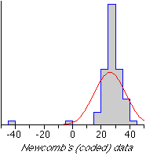

Applying the general properties of p-values to different tests
The properties of p-values (and hence their interpretation) have been demonstrated in the context of a hypothesis test about whether a population mean was zero.
P-values for all hypothesis tests have the same properties. As a result, we can interpret any p-value if we know the null and alternative hypotheses that it tests, even if we do not know the formulae that underlies it. (In practice, a statistical computer program is generally used to perform hypothesis tests, so knowledge of formulae is of little importance.)
In particular, for any test where the null hypothesis restricts a parameter to a single value,
| p-value | Interpretation |
|---|---|
| over 0.1 | no evidence that the null hypothesis does not hold |
| between 0.05 and 0.1 | very weak evidence that the null hypothesis does not hold |
| between 0.01 and 0.05 | moderately strong evidence that the null hypothesis does not hold |
| under 0.01 | strong evidence that the null hypothesis does not hold |
Another type of test
The normal distribution is often used as a hypothetical population from which a set of data are assumed to be sampled. But are the data consistent with an underlying normal population, or does the population distribution have a different shape?
One popular test for assessing whether a random sample come from a normal population is the Shapiro-Wilkes W test. The theory behind the test is advanced and the formula for the p-value cannot be readily evaluated by hand. However most statistical programs will perform the test.
A random sample of 40 values from a normal population is displayed in a jittered dot plot on the left of the diagram. The p-value for the Shapiro-Wilkes W test is shown under the dot plot and also graphically on the right.
Click Take sample a few times to take more samples and build the distribution of the p-values for the test. You should observe that the p-values have a rectangular distribution between 0 and 1 when the null hypothesis is true (i.e. if the samples are from a normal distribution).
Drag the slider on the top left of the diagram to change the shape of the population distribution. Repeat the exercise above and observe that when the null hypothesis does not hold, the p-values tend to be closer to 0.
Click on crosses on the display of p-values in the bottom right to display the sample that produced that p-value. P-values near zero usually correspond to samples that have very long tails to one or both sides, or have very short tails to one or both sides.
Measuring the speed of light
As a numerical example, consider the following experimental measurements made by a scientist, Simon Newcomb, in 1882 for the purpose of estimating the speed of light in air. The values were the times in nanoseconds (0.000000001 seconds) for light to travel 7442 metres. Since the measurements were all close to 24,800, they have been coded
| Raw data (nanoseconds) | Coded data |
|---|---|
| 24,828 | 24,828 - 24,800 = 28 |
| 24,826 | 24,826 - 24,800 = 26 |
| etc | etc |
The coded data and a histogram are shown below.
| 28 26 33 24 34 -44 27 16 40 -2 29 22 24 21 25 30 23 29 31 19 24 20 36 32 36 28 25 21 28 29 37 25 28 26 30 32 36 26 30 22 36 23 27 27 28 27 31 27 26 33 26 32 32 24 39 28 24 25 32 25 29 27 28 29 16 23 |
 |
The best-fitting normal distribution (with mean and standard deviation equal to those of the data) has been superimposed on the histogram. Could the two 'outliers' in the data have occurred by chance from a normal population?
Applying the Shapiro-Wilkes W test to the data using the statistical program JMP gives a p-value '0.0000'. Since JMP rounds p-values to four decimal places, this really means that the p-value is less than 0.00005. We therefore conclude that the probability of obtaining such a non-normal looking sample from a normal distribution is less than 0.00005, so there is extremely strong evidence that the data do not come from a normal population.
In contrast, if the two 'outliers' are omitted, JMP reports a p-value of 0.6167 for the test. Since a p-value as low as this would be found from 62% of samples from a normal population, there is no evidence that the data without the outliers are non-normal. The test therefore lends support to the assertion that the two outliers resulted from errors in Newcomb's experimental procedures.
You should be able to interpret p-values that computer software provides for a wide variety of hypothesis tests using the properties that we have described in this section.